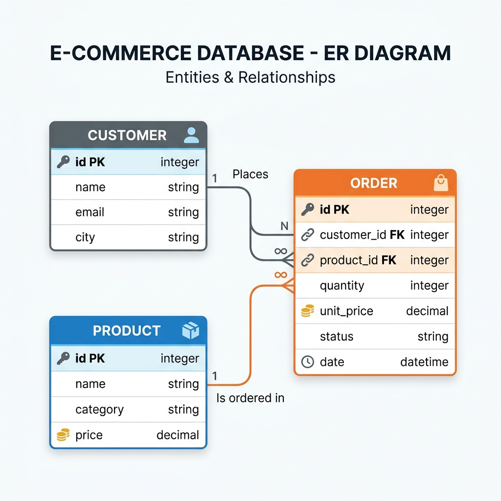

Spark Delta & Iceberg
Sobre o Projeto
Este projeto foi desenvolvido como trabalho universitário da disciplina de Arquitetura de Dados.
O objetivo é demonstrar, de forma prática, o uso de formatos de tabela transacionais — Delta Lake e Apache Iceberg — sobre o motor de processamento Apache Spark (PySpark).
Participantes: Gabriel Minatto · Anderson dos Santos · Lorenzo
Repositório: github.com/Lorenbou/spark-delta-apache
Cenário de Negócio
Modelamos uma plataforma de e-commerce simplificada com três entidades principais:
| Entidade | Descrição |
|---|---|
| Cliente | Dados cadastrais do comprador (nome, e-mail, cidade) |
| Produto | Catálogo com categoria e preço |
| Pedido | Relaciona cliente e produto com status, quantidade e data |
Este cenário permite demonstrar operações DML de forma realista:
- INSERT — registrar novos clientes, produtos e pedidos
- UPDATE — atualizar status de pedidos e preços de produtos
- DELETE — cancelar (remover) pedidos
Modelo Entidade-Relacionamento

┌──────────────┐ ┌──────────────┐
│ CUSTOMER │ │ PRODUCT │
├──────────────┤ ├──────────────┤
│ customer_id │PK │ product_id │PK
│ name │ │ name │
│ email │ │ category │
│ city │ │ price │
└──────┬───────┘ └──────┬───────┘
│ │
│ ┌─────────────────┘
│ │
▼ ▼
┌─────────────────────┐
│ ORDER │
├─────────────────────┤
│ order_id (PK) │
│ customer_id (FK) │
│ product_id (FK) │
│ quantity │
│ unit_price │
│ status │
│ order_date │
└─────────────────────┘
Tecnologias Utilizadas
| Tecnologia | Versão | Papel |
|---|---|---|
| Apache Spark | 3.5.3 | Motor de processamento distribuído |
| PySpark | 3.5.3 | API Python do Apache Spark |
| Delta Lake | 3.2.0 | Formato de tabela ACID sobre Spark |
| Apache Iceberg | 1.6.1 | Formato de tabela aberto para dados analíticos |
| Poetry | — | Gerenciamento de dependências Python |
| JupyterLab | ≥4.2.5 | Ambiente de execução dos notebooks |
Notebooks
Os notebooks estão na pasta notebooks/ do repositório:
delta_lake.ipynb— Demonstração completa com Delta Lake: DDL, INSERT, UPDATE, DELETE e Time Travelapache_iceberg.ipynb— Demonstração completa com Apache Iceberg: DDL, INSERT, UPDATE, DELETE e Snapshots